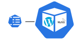
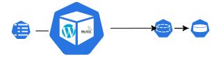
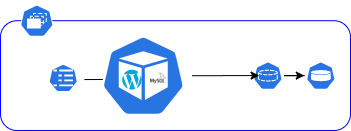
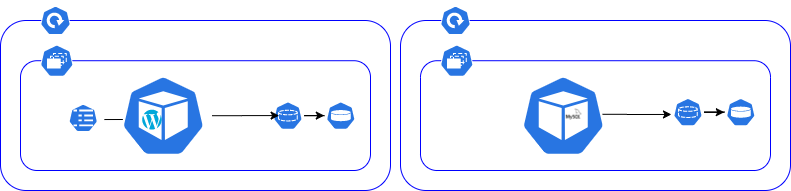
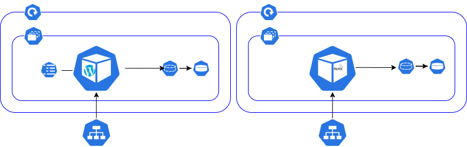

Kubernetes-wordpress¶
This handson training is a follow up of the Kubernetes Introduction talk downloadable here.
During this session you will discover the Kubernetes basic components which are used to deploy a high available WordPress stack. If you like consoles and Kubernetes, join us and enjoy the Kubernetes learning trip.
I made the choice to not use all the kubectl functions to priviledge the usage of manifest files. This is because it makes an Infrastructure As Code approach easier.
Pre-requisite¶
- A Kubernetes cluster
- Work directory is /tutorials/kubernetes-wordpress
Namespace¶
A namespace is a Kubernetes environment used to isolate ressources.
Create a namespace¶
kubectl apply -f manifests/namespace.yaml
Verify the namespace was created¶
kubectl get namespace demo
Pods¶
Basic execution unit of a Kubernetes application, all containers inside a pods share the same storage and network.
Create a pod¶

kubectl apply -f manifests/pod.yaml
Observations:
- If you have a look the manifest file you will notice that the mysql host address is the pod name, indeed containers inside a pod shares the same IP.
- Multiple containers are defined, this is because a pod is composed of one or multiple containers.
Check the pod is running¶
kubectl get pods --namespace demo
Observations:
The kubectl cli return :
- The age of the pod
- The number of restart, it may help to detect an unstability
Check the pod logs¶
kubectl logs -c wordpress wordpress-pod --namespace demo
kubectl logs -c mysql wordpress-pod --namespace demo
Access wordpress¶
kubectl port-forward --namespace demo pods/wordpress-pod 8080:80
Observations:
kubectl port-forward is a convenient way to access kubernetes endpoints which are not publicly exposed.
Robustness¶
Stop the wordpress container and check the pod status
kubectl exec -ti --namespace demo -c wordpress wordpress-pod kill 1 && kubectl get pods --namespace demo
Check again the pod satus
kubectl get pods --namespace demo
Observations:
After a short period of time the container is restarted. Indeed a pod ensure his contained containers are still up and running. This is the first level of self healing we can find in Kubenetes.
Config map¶
A config map is used to store configurations and apply it to a pod / container. You can create a config map from a directory, a file or again a litteral value.

Create a configuration map¶
kubectl apply -f manifests/configmap.yaml
Observations:
The data section of a config map contains keypair values used to store configuration items.
Verify it has been created¶
kubectl get configmap --namespace demo
Observations:
The CLI returns :
- The number of keys contained into the config map
- The age of the config map
Config map usage¶
In this example we will populate the environment variables from the config map and create a test file on the pod disk.
Create the pod¶
kubectl delete -f manifests/pod.yaml
kubectl apply -f manifests/pod-vol.yaml
Describe the pod¶
kubectl describe pods -n demo wordpress-pod
Observations:
The CLI returns :
- All the pod Kubernetes events
- All the pods meta data such as port used, docker image ...
- In the WordPress.Environment section, you will the that the variables have been populated by the config map.
Verify our custom configuration file was pushed¶
kubectl exec -ti -c wordpress wordpress-pod -n demo ls /var/www/html/k8s-wp-config.php
Ephemeral storage¶
To access WordPress and finaliazd the configuration :
-
Open a tunnel
kubectl port-forward --namespace demo pods/wordpress-pod 8080:80 -
Navigate to http://localhost:8080 and complete the WordPress configuration
-
Delete and recreate the pod
kubectl delete -f manifests/pod-vol.yaml
kubectl apply -f manifests/pod-vol.yaml
kubectl port-forward --namespace demo pods/wordpress-pod 8080:80
kubectl port-forward --namespace demo pods/wordpress-pod 8080:80
Observations:
Your configuration disappears. This is because your MySQL data are stored on an ephemeral storage with a life time equal to the pod life time.
Persistent Volume Claim¶

Create a PVC¶
A persistent volume claim is a Kubernetes user side object used to request a persistent storage managed by Kubernetes administrators.
Request a persistent volume to store the MySQL data.
kubectl delete -f manifests/pod-vol.yaml
kubectl apply -f manifests/mysql-pvc.yaml
Check the PVC exist¶
kubectl get pvc --namespace demo
Observations:
The CLI returns:
- The storage class used. The storage class is used to defined the type of storage used.
- The status of the binding.
- The size of the volume
Bind the PVC to the wordpress pod¶
Create the WordPress pod and describe it
kubectl apply -f manifests/pod-vol-pvc.yaml
kubectl describe $(kubectl get pods -n demo --output=name) -n demo
Observations:
- In the Volumes section we can see the mysql-data pvc.
- In mysql.Mounts we can see the /var/lib/mysql mounted the PVC.
Configure WordPress¶
- Open a tunnel
kubectl port-forward --namespace demo pods/wordpress-pod 8080:80
-
Navigate to http://localhost:8080 to complete the configuration
-
Delete and recreate the pod
kubectl delete -f manifests/pod-vol-pvc.yaml
kubectl apply -f manifests/pod-vol-pvc.yaml
- Open the tunnel and open the WordPress website
kubectl port-forward --namespace demo pods/wordpress-pod 8080:80
Observations:
This time you directly reach the WordPress public interfce. It means your configuration survice to the restart. This is because the MySQL data are stored on a persistant volume.
Let's delete the pod¶
kubectl delete pods --namespace demo wordpress-pod
kubectl get pods --namespace demo
Observations:
- The pod disappeared and was not recreated, this because the Pod is responsible to ensure the contained containers are still present, but it can't ensure itself is up and running.
ReplicaSet¶
Replicasets are used to maintain a number of avaible pods.

Create a replicaset¶
kubectl apply -f manifests/replicaset.yaml
Check the replicaset exists¶
kubectl get replicaset --namespace demo
As for all the other objects you can get more details in running a describe command.
kubectl describe replicaset --namespace demo wordpress-replicaset
Check pods were created¶
kubectl get pods --namespace demo
Create a non managed pod¶
Let's create a pod not managed by the replicaset, and list the pods inside the namespace.
kubectl apply -f manifests/pod.yaml && kubectl get pods --namespace demo
Obersvations:
The pod is automatically terminated. This is because the replicaset manages all the pods which have the label app: wordpress. As the maximum number of pods was already created, all the new ones are automatically terminated.
Try to kill all pods¶
kubectl delete pods --all --namespace demo
Check pods status¶
kubectl get pods --namespace demo
Observations:
- New pods have been created, this is because a replicaset ensure a specific number of replicas is available.
- Pods are named per the replicaset name.
Horizontally scale¶
- Edit the file replicaset.yaml
- Modify the number of replicas
- Save the file
-
Apply the new configuration
5. Get the podskubectl apply -f manifests/replicaset.yamlkubectl get pods --namespace demoObservations:
- New pods are created.
- We can create a pod auto scaller to trigger horizontal scale based on pod metrics.
Deployment¶
While Replica Sets still have the capability to manage pods, and scale instances of certain pod, they don’t have the ability to perform a rolling update and some other features. Instead, this functionality is managed by a Deployment, which is the resource that a user using Kubernetes today would mostly likely interact with. 
Create a deployment¶
As only one MySQL instance can access the MySQL data directory at a time, let's split our pod in two deployments with a dedicated volume for the wordpress containers.
kubectl apply -f manifests/wordpress-pvc.yaml
kubectl apply -f manifests/wordpress-deployment.yaml -f manifests/mysql-deployment.yaml
Get pods¶
kubectl get pods -n demo
The wordpress and mysql pods were created
Get deployments¶
kubectl get deployments --namespace demo
Get replicasets¶
kubectl get replicaset -n demo
Observations:
- Pods are named using the deployment name
- Pods created by the replica set does not count in the deployment pods, this is because deployments create their own replicaset.
Describe deployments¶
kubectl describe deployment wordpress-deployment --namespace demo
Observations:
The default update strategy is RollingUpdate (25% max unavailable, 25% max surge)
Update your wordpress version¶
- Edit the file manifests/deployment.yaml
- Line 32 modify the tag 5.3-php7.2 with latest
- Save and apply your changes
kubectl apply -f manifests/wordpress-deployment.yaml - Observe your update
kubectl get pods --namespace demo
Observations:
During the update some pods are still up to serve the traffic. The deployment behaviour can be customized.
Rollback¶
- Display the deployment versions
kubectl rollout history deployment.v1.apps/wordpress-deployment --namespace demo - You can display the second revision content with:
kubectl rollout history deployment.v1.apps/wordpress-deployment --namespace demo --revision 2 - Rollback to the revision 1
- Either you undo the latest deployment
kubectl rollout undo deployment.v1.apps/wordpress-deployment --namespace demo - Or you rollback to a specific version
kubectl rollout undo deployment.v1.apps/wordpress-deployment --to-revision=1 --namespace demo
We have a robust deployment, we can lost one pods it will be recreated, we can lost one container it will be recreated. That is super great but we can't load balance the traffic accross the replicas, we can just access it one by one.
Service¶
A kubernetes service is an endpoint used to spread the incoming traffic accross multiple pods providing the same service.

Create a service¶
Create the services used to access the WordPress and the MySQL pods.
kubectl apply -f manifests/wordpress-service.yaml -f manifests/mysql-service.yaml
Describe the service¶
kubectl describe services wordpress-svc --namespace demo
Observations:
- You can see the internal IP address of our service as well as the 4 endpoints IPs matching the pods IPs which are behind.
- The service is of type ClusterIP, but there are differents kind of service which behave differently (NodeIP, LoadBalancer).
Update the wordpress configuration¶
As the pod wordpress-pod no longer exists, the current configuration will not work. We have to update it with the kubernetes endpoint name to ensure we will be able to reach the mysql database.
kubectl delete -f manifests/configmap.yaml
kubectl apply -f manifests/configmap-svc.yaml
kubectl delete -f manifests/wordpress-deployment.yaml
kubectl apply -f manifests/wordpress-deployment.yaml
Open a tunnel to our wordpress service¶
Open a tunnel
kubectl port-forward --namespace demo svc/wordpress-svc 8080:80
Observations:
- We used the wordpress-svc service to reach one of the WordPress pods.
- The WordPress pods are now accessible, but there are still not visible on internet.
Ingress¶

An ingress is a reverse proxy used to reach the internal applications from a client ouside the cluster.
Let's create our unsecure wordpress ingress
kubectl apply -f manifests/ingress-tls.yaml
Verify the ingress was correctly created
kubectl get ingress -n demo
additional configuration
- kubectl port-forward --namespace demo svc/wordpress-svc 8080:80
Note: We have to configure WordPres with the DNS to make it works, indeed there is an internal rewrite mechanism which prevent to make it works if we don't have the good configuation'.